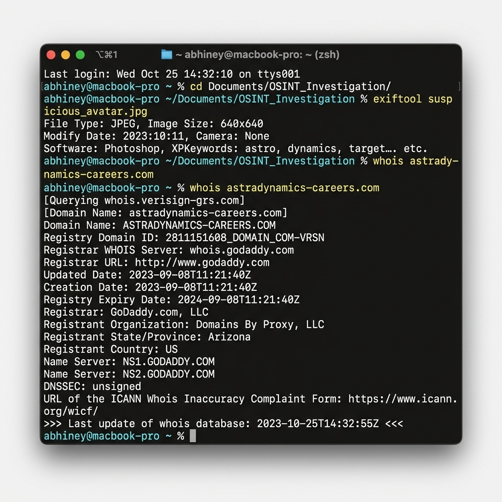

Strict Educational Disclaimer
This case study is a completely simulated training exercise developed by visualnotes.tech. All entities, organizations, software utilities, digital signatures, threat groups, commands, and characters featured in this analysis are entirely fictitious. Any resemblance to actual organizations, living or deceased individuals, or real-world events is purely coincidental.
All views, analyses, opinions, and research methodologies expressed in this case study represent the personal thoughts, perspectives, and independent research of Abhiney Sharma, and do not necessarily reflect the official policy, position, or endorsement of any other agency, organization, employer, or corporate entity.
Simulated Scenario Context
In this training scenario, a fictitious threat group designated as Chroma-Weaver (APT-99) launched a highly targeted social engineering operation against **AstraDynamics Corp** and its primary supplier, **Caelum Aerospace**. The operation was dubbed **Operation Horizon-Lure**.
The attackers bypassed standard gateway filters by engaging employees entirely on LinkedIn. Operating under the synthetic persona of **"Jane Doe (XYZ-123)"**—alleged Recruiter for **XYZ Recruiting Group**—the actors built connections with regional defense subcontractors to build "mutual connection" trust scores.
Once trust was established, they contacted core telemetry engineers, offering them senior flight software roles at a competitor. Targets were invited to view a confidential prospectus page hosted on a lookalike domain (`astradynamics-careers[.]com`) and download a password-protected file containing a hidden, diagnostic exfiltration agent.
Simulated LinkedIn Profile Anatomy
The primary attack vector utilized in this simulated campaign was the synthetic recruiter profile shown below. In this training scenario, the profile content utilizes generic fictitious variables (like XYZ and 123) to highlight the generic templated structure of modern recruitment-themed lures:
- Vanity URL Mismatch: The actual URL path resolved to a generic identifier like linkedin.com/in/abc-xyz-123 instead of the displayed profile name. This indicates a renamed, hijacked account.
- Synthetic Avatar: Under magnification, the photo borders showed typical XYZ image anomalies, including asymmetrical pixel boundaries, missing earrings, and distorted backgrounds characteristic of AI image generators.
- Network Clustering: The account possessed exactly 123 connections and displayed zero historical posts, article shares, or comments on industry updates, indicative of a fresh template deployment.
Deep-Dive Investigation Workflow
This section details the hands-on investigative workflow required to triage the campaign. It highlights precise tools, command-line arguments, and how to analyze their outputs.
Phase 1: Profile & Image Verification Forensics
When a suspicious recruiter profile is identified, the investigator must analyze the profile avatar and biography to identify synthetic or plagiarized indicators.
Analysis Steps:
- Metadata Triage: Running exiftool helps identify if the file contains tags associated with graphic software generators or anomalous creation dates that contradict the profile's claims.
- Visual Anomalies: Perform close-up inspection on the face. Check the eye reflections (AI generated faces often have asymmetrical catchlights), ears (asymmetrical sizes or missing lobes), and background patterns (soft, melting structures).
- Plagiarism Triage: Copy the text block from the profile's summary and execute a search query wrapped in double quotes:
Phase 2: Text & Account History Verification
Attackers often register usernames that mirror legitimate accounts, or use automated utilities to register profiles across alternative platforms.
Analysis Steps:
- GitHub Commit Audits: If a GitHub repository is listed in the recruiter's biography, inspect the underlying commit history. Fictitious personas often contain repositories with recently backdated commits to simulate historical activity.
- Vanity URL Comparison: Review the account's historical names. If the displayed profile name is "Jane Doe (XYZ-123)" but the vanity URL resolves to a different name, it indicates a hijacked account that was renamed.
Phase 3: Domain & Infrastructure Footprinting
If the suspect recruiter directs targets to an external portal, the analyst must analyze the domain registration timeline and network records.
Analysis Steps:
- Domain Age Evaluation: Domains registered shortly before or during the active campaign phase are highly suspicious.
- Sibling Domain Mapping: Pivot on the nameservers (ns1.xyz-recruiting.com) to search for other lookalike portals configured on the same registry. We can execute a subdomain discovery using subfinder:
Phase 4: Spear-Phishing Payload & Git Forensics
If the employee downloaded a file, retrieve the payload to extract the cryptographic hash, metadata, and analyze the distribution repository.
Analysis Steps:
- Commit Timestamp Discrepancy: In the simulated repository logs, the AuthorDate and CommitDate do not match. The actor backdated the author field to 2021 to make the portfolio seem older, but the true Git commit date shows it was assembled in May 2024.
- Hash Registry Matching: Query the computed file hash on threat directories to check if the diagnostic agent matches known malicious patterns.

Strategic Corporate Defensive Playbook
Preventing social engineering attacks via professional networks requires implementing a multi-layered strategic security framework. Traditional email security filters do not protect against direct LinkedIn messages.
1. Professional Network Security Policies
Organizations must implement clear, strategic policies governing how employees use professional social networks:
- Strict Role-Based Profile Rules: High-value staff (such as autopilot software architects, core database administrators, and defense project directors) should restrict the technical details listed in their public bios. Avoid listing specific operating systems, software repositories, or internal software toolings.
- Recruitment Verification Channels: Employees should be trained to verify any recruiting inquiries by requesting an official company email from the recruiter, then validating that sending domain against their enterprise registry.
2. Email and Domain Hardening (SPF, DKIM, DMARC)
To prevent attackers from registering lookalike domains to send emails that look legitimate, companies should enforce strict email authentication policies:
- DMARC (Domain-based Message Authentication, Reporting, and Conformance): Deploy DMARC with a p=reject policy to ensure that unauthorized servers cannot spoof organizational emails.
- Defensive Lookalike Domain Registration: Organizations should proactively register common lookalike variants of their primary domains (e.g., registering astradynamics-careers.com if the corporate site is astradynamics.com) to prevent attackers from acquiring them.
3. Single Sign-On (SSO) and Endpoint Protections
Limit the impact of compromised endpoints by isolating credentials:
- Hardware Security Keys: Implement FIDO2-compliant physical hardware keys (like YubiKeys) for all authentication requests. This makes credential harvesting pages ineffective, as the physical key signature cannot be captured by a fake portal.
- Endpoint Privilege Management: Prevent users from executing unapproved or unsigned binaries downloaded from external resources, rendering dropped backdoors inert.
4. InMail Spear-Phishing Simulations
Expand standard training programs to model modern attack methods:
- Simulated Recruiting Scenarios: Conduct security awareness exercises modeling the "Horizon-Lure" framework. Send simulated recruiter InMails to key staff and measure the click-through rates.
- Reporting Integration: Establish a clear process where employees can screenshot and report suspicious social media profiles directly to the Security Operations Center (SOC).
Simulated Threat Indicators (IoCs)
Use this matrix of simulated indicators to test network monitoring configurations and practice query writing.
| Indicator Type | Simulated Value (Fictitious) | Observed Context | Action Required |
|---|---|---|---|
| Domain | astradynamics-careers[.]com | Impersonation of AstraDynamics Corp hiring network | Block on corporate DNS and proxies |
| Domain | caelumaerospace-jobs[.]com | Impersonation of Caelum Aerospace portal | Block on corporate DNS and proxies |
| Domain | xyz-recruiting[.]com | Mock recruitment agency website | Investigate historical access logs |
| File Hash (SHA256) | e3b0c44298fc1c149afbf4c8996fb92427ae41e4... | Mock job prospectus PDF with Aether-Stealer agent | Flag hash in Endpoint Detection & Response (EDR) |
| C2 IP Address | 203.0.113.84 | Simulated command & control hosting node | Block on edge firewalls |
Hands-On Practical Lab Exercises
Put theory into practice by executing live commands in your local terminal. To ensure safety, these exercises use actual, globally recognized "dummy/sandbox" resources and public reference targets (like example.com or iana.org). These live sandboxes allow you to practice identical lookup structures safely without interacting with malicious networks:
Practice visual metadata verification on your local system using safe, self-created files:
- Take a photo using a mobile phone or download a generic, public domain picture.
- Open your terminal and execute: exiftool test_image.jpg
- Locate and document the following tags in your lab sheet: Software, Camera Model, and Create Date. Compare how editing indicators differ from raw, unmodified camera files.
Practice domain query tracing using the official global sandbox target, example.com:
- Open your terminal and run the registration query: whois example.com
- Filter the raw output to identify the administrative registries: whois example.com | grep -iE "creation|registrar|organization"
- Note down the Creation Date (established in 1992) and check how a long-standing, globally verified sandbox registry compares to a volatile, 90-day-old threat registration.
Practice DNS payload harvesting using the official internet numbers repository, iana.org:
- Query the active Mail Exchange routing servers using the terminal command: dig MX iana.org +short
- Verify the authoritative nameservers responsible for the domain zone: dig NS iana.org +short
- Document the IP records and compare how multiple layered redundant nameservers establish official validation, unlike single hosting nodes.
Practice footprinting using the standard dummy target domain, example.com:
- Initialize subdomain scanning by running the command: subfinder -d example.com -o subdomains_example.txt
- Inspect the text file: cat subdomains_example.txt
- Verify if the domain resolves any active sub-records, and document how passive DNS tools parse public databases safely.